텔레마케팅관리사 (2015-03-08 기출문제)
1과목: 판매관리
1. 기업의 마케팅활동은 크게 네 가지 분야로 나눌 수 있는데 이러한 마케팅 믹스(4P's)의 구성요소로 틀린 것은?
- 제 품
- 유 통
- 가 격
- 정 보
(정답률: 69%)

2. 데이터베이스 마케팅에서 RFM 분석에 대한 설명과 거리가 먼 것은?
- 구매최근성 - 얼마나 최근에 구매했는가?
- 구매빈도 - 일정기간 동안 얼마나 자주 자사제품을 구매했는가?
- 구매액 - 일정기간 동안 얼마나 많은 액수의 자사제품을 구매했는가?
- 구매방식 - 상담원을 통한 구매인가? 인터넷을 이용한 구매인가?
(정답률: 55%)
3. 아웃바운드 텔레마케팅 운영시 유의해야 할 사항과 거리가 먼 것은?
- 아웃바운드 운영방향을 결정해야 한다.
- 고객데이터를 확보하고 지속적으로 관리하여야 한다.
- 텔레마케팅을 관리할 수 있는 수퍼바이저만을 집중적으로 육성해야 한다.
- 텔레마케터의 고객상담 능력을 제고할 수 있는 교육과 충분한 준비물 및 정교한 스크립트 등이 있어야 한다.
(정답률: 71%)
4. 다음 중 시장세분화의 심리 분석적 변수는?
- 소 득
- 직 업
- 도시의 크기
- 라이프스타일
(정답률: 65%)
5. 고객속성 데이터에 대한 설명으로 옳은 것은?
- 주로 콜센터나 기업의 내부에서 생성한 데이터베이스를 말한다.
- 외부 전문기관에서 구입한 명단, 제휴마케팅을 통해 획득한 데이터베이스를 말한다.
- 고객이 지닌 고유속성으로 주소, 전화번호, 주민등록번호 등의 데이터를 의미한다.
- 거래나 구매사실, 구매행동 결과로 나타나는 속성으로 회원가입일, 최초구매일, 연체내역 등의 데이터를 말한다.
(정답률: 54%)
6. 가격결정에 영향을 미치는 요인을 내적요인과 외적요인으로 구분할 때, 내적요인으로 옳지 않은 것은?
- 마케팅목표
- 마케팅믹스 전략
- 원 가
- 시장과 수요
(정답률: 59%)
7. 단일 브랜드에 대한 호의적인 태도와 지속적인 구매를 보이는 소비자의 행동을 의미하는 것은?
- 브랜드 차별(brand discrimination)
- 행위적 학습(behavioral learning)
- 선별적 인식(selective perception)
- 브랜드 충성도(brand loyalty)
(정답률: 64%)
8. 다음 중 가격결정에 있어서 상대적으로 고가의 가격이 적합한 경우가 아닌 것은?
- 수요의 가격탄력성이 높을 때
- 진입장벽이 높아 경쟁기업이 자사제품의 가격만큼 낮추기가 어려울 때
- 규모의 경제효과를 통한 이득이 미미할 때
- 높은 품질로 새로운 소비자층을 유인하고자 할 때
(정답률: 52%)
9. 다음이 설명하는 시장세분화 분류기준은?
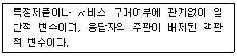
- 인구통계학
- 라이프스타일
- 심리 및 태도
- 제품 편익
(정답률: 50%)
10. 항공사들은 동일한 항공사 비행기를 반복해서 이용하도록 장려하기 위해 상용고객 프로그램을 개발하였다. 이러한 세분화기법은 다음 중 어떤 측면을 기반으로 한 것인가?
- 추구편익
- 서비스 이용률
- 구매의도
- 구매조건
(정답률: 56%)
11. 기업의 전략적 사업 단위(SBU)를 분석하는 데 이용되는 BCG(Boston Consulting Group) 모형에서 수평축은 무엇을 반영하는 것인가?
- 희망투자 수익률
- 시장 성장률
- 세분시장 규모
- 상대적 시장점유율
(정답률: 37%)
12. 일반적으로 인쇄매체를 통한 마케팅과는 달리 텔레마케팅이 가지고 있는 가장 큰 특성은?
- 예약 가능성
- 양방향성
- 대중성
- 목표 도달성
(정답률: 62%)
13. 고객리스트의 효율적인 관리방법으로 거리가 먼 것은?
- 고객데이터 속성의 질 개선
- 고객리스트 데이터베이스화
- 고객리스트의 지속적 갱신
- 고객속성에 따른 일률적 대응
(정답률: 55%)
14. 소비자가 서비스 구매의 의사결정과정에서 접할 수 있는 일반적인 위험 유형에 관한 설명으로 틀린 것은?
- 재무적 위험 - 구매가 잘못되었거나 서비스가 제대로 수행되지 않았을 때 발생할 수 있는 금전적 손실
- 물리적 위험 - 구매했던 의도와 달리 제대로 기능을 발휘하지 않을 가능성
- 사회적 위험 - 구매로 인해 소비자의 사회적인 지위가 손상 받을 가능성
- 심리적 위험 - 구매로 인해 소비자의 자아를 손상 받을 가능성
(정답률: 49%)
15. 아웃바운드 텔레마케터에게 요구되는 프로모션 능력이 아닌 것은?
- 상품 및 서비스에 대한 사전지식 숙지
- 고객에게 호감을 줄 수 있는 경청자세기법 숙달
- 고객의 반론이나 거절에 순응하는 자세
- 고객과의 친밀한 관계형성 자세
(정답률: 51%)
16. 수요의 가격탄력도와 가격전략의 관계에 대한 설명으로 옳지 않은 것은?
- 수요의 가격탄력도란 제품가격의 변화에 대한 수요의 변화비율을 말한다.
- 수요의 가격탄력도가 비탄력적인 경우에는 고가전략을 하면 기업에 유리하다.
- 수요의 가격탄력도가 단위 탄력적이라면 최고가전략이 기업에 유리하다.
- 수요의 가격탄력도가 탄력적이면 저가격전략을 하여야 기업에 유리하다.
(정답률: 53%)
17. 데이터베이스 마케팅의 주된 목적을 가장 잘 설명한 것은?
- DB마케팅은 특정 고객집단의 특별한 요구를 바탕으로 마케팅전략을 수립하여 이를 실현하기 위한 목적을 가지고 있다.
- DB마케팅은 정보기술의 기반구조를 바탕으로 새로운 고객관리를 통해 마케팅의 효율성을 제고하는 것이 주된 목적이다.
- 고객에 대한 상세한 정보를 토대로 그들과의 장기적 관계를 구축하고 충성도를 제고시킴으로써 고객생애가치를 극대화하는 것이다.
- 고객의 정보를 효율적인 관리를 통해 경영의 효율성과 효과성을 제고하는 것이 주된 목적이다.
(정답률: 47%)
18. 데이터베이스 마케팅의 특징으로 옳지 않은 것은?
- 고객과의 1:1 관계의 구축
- 쌍방향 의사소통
- 고객의 데이터베이스화
- 단기간의 고객관리
(정답률: 60%)
19. 평생고객가치에 대한 설명으로 옳은 것은?
- 고객이 처음으로 자사제품을 구입한 시기를 말한다.
- 특정 회사의 제품이나 서비스를 처음 구매했을 때부터 시작해서 사망하는 시점까지의 기간을 의미한다.
- 특정 회사의 제품이나 서비스를 처음 구매했을 때부터 사망했을 때까지 구입한 서비스 누계를 말한다.
- 특정 회사의 제품이나 서비스를 처음 구매했을 때부터 시작해서 마지막으로 구매할 것이라고 판단되는 시점까지 구매가 가능한 제품이나 서비스의 누계액을 의미한다.
(정답률: 54%)
20. 다음이 설명하는 시장 커버리지 전략은?
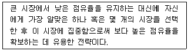
- 비차별화 마케팅
- 차별화 마케팅
- 집중화 마케팅
- 순차적 마케팅
(정답률: 62%)
21. 다음 괄호 안에 들어갈 말로 가장 알맞은 것은?
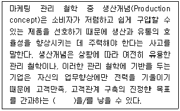
- 마케팅 근시안
- 인지 부조화
- 소비자 외면
- 선별적 관계 관리
(정답률: 41%)
22. 마케팅전략 중 기업이 제품을 개발하고, 가격을 설정하여 판매하며, 판매채널을 개발하고, 판촉활동을 전개하는 것은?
- 목표시장 전략
- 표적시장 전략
- 시장세분화 전략
- 마케팅믹스 전략
(정답률: 53%)
23. 다음 중 아웃바운드 판매에 해당하는 사항을 모두 나열한 것은?(오류 신고가 접수된 문제입니다. 반드시 정답과 해설을 확인하시기 바랍니다.)
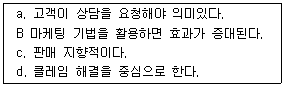
- a, b
- b, c
- c, d
- a, d
(정답률: 60%)
24. 마케팅에서 판매촉진 비중이 증가하게 된 주된 원인으로 볼 수 없는 것은?
- 광고노출
- 가격민감도
- 판매촉진 성과 측정
- 경쟁의 완화
(정답률: 56%)
25. 소비자의 구매과정을 중심으로 소비재를 분류하였을 때 포함되지 않는 것은?
- 편의품(Convenience products)
- 유사품(Imitated products)
- 선매품(Shopping products)
- 전문품(Specialty Products)
(정답률: 50%)
2과목: 시장조사
26. 우리나라 주부들이 가장 선호하는 김치냉장고 브랜드를 알아보기 위하여 주부들을 대상으로 연구를 진행하려고 한다. 현실성이나 시간, 비용을 고려할 때 선택할 수 있는 조사방법으로 가장 거리가 먼 것은?
- 관찰법
- 실험실 실험법
- 면접법
- 설문조사법
(정답률: 44%)
27. 표본조사시 발생할 수 있는 불포함 오류의 설명으로 가장 적합한 것은?
- 표본조사시 표본체계가 완전하지 않아서 생기는 오류
- 표본추출과정에서 선정된 표본 중에서 응답을 얻어내지 못하여 생기는 오류
- 면접이나 관찰과정에서 응답자나 조사자 자체의 특성에서 생기는 오류
- 정확한 응답이나 행동을 한 결과를 조사자가 잘못 기록하거나, 기록된 설문지나 면접지가 분석을 위하여 처리되는 과정에서 틀려지는 오류
(정답률: 24%)
28. 다음 괄호 안에 들어갈 말로 가장 알맞은 것은?
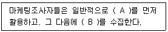
- A : 외부 2차 자료, B : 내부 2차 자료
- A : 내부 1차 자료, B : 외부 1차 자료
- A : 1차 자료, B : 2차 자료
- A : 2차 자료, B : 1차 자료
(정답률: 40%)
29. 다음은 주요 자료수집방법의 비교표이다. 괄호 안에 알맞은 것은?
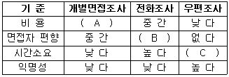
- A : 높다, B : 낮다, C : 낮다
- A : 낮다, B : 높다, C : 낮다
- A : 낮다, B : 낮다, C : 높다
- A : 높다, B : 높다, C : 낮다
(정답률: 45%)
30. 다음 설문문항이 가지고 있는 오류에 관한 설명으로 가장 적합한 것은?
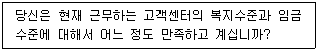
- 단어들의 뜻을 명확하게 설명해야 한다.
- 하나의 항목으로 두 가지 내용을 질문하여서는 안 된다.
- 응답자들에게 지나치게 자세한 응답을 요구해서는 안 된다.
- 대답을 유도하는 질문을 해서는 안 된다.
(정답률: 60%)
31. 비표준화 면접에 비해 표준화 면접이 가지는 장점이 아닌 것은?
- 반복적인 면접이 가능하다.
- 면접상황에 대한 적응도가 높다.
- 면접결과의 숫자화 측정이 용이하다.
- 조사자의 행동이 통일성을 갖게 된다.
(정답률: 25%)
32. 탐색조사방법에 해당하지 않는 것은?
- 종단조사
- 전문가 의견조사
- 사례조사
- 문헌조사
(정답률: 46%)
33. 다음과 같은 질문으로 얻은 측정치는 어떤 척도에 해당되는가?
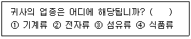
- 명목척도
- 서열척도
- 등간척도
- 비율척도
(정답률: 48%)
34. 다음과 같이 시장 내의 여러 경쟁상표들에 대한 소비자의 생각을 하나의 도표 상에 나타낸 것은?
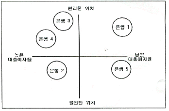
- 로드맵
- 포지셔닝 맵
- 횡단 조사표
- 종단 조사표
(정답률: 58%)
35. 표본 프레임(sampling frame)에 관한 설명으로 틀린 것은?
- 표본을 추출하기 위한 모집단의 목록이다.
- 표본추출 단위가 집단인 경우에는 표본 프레임은 집단별 목록만 있으면 된다.
- 비확률표본추출방법을 이용할 경우에는 정확한 표본 프레임이 있어야 한다.
- 정확한 확률표본추출을 하기 위해서는 모집단과 정확하게 일치하는 표본프레임이 확보되어야 한다.
(정답률: 41%)
36. 설문조사 후 코딩작업에 대한 설명으로 틀린 것은?
- 항목별로 각 응답에 해당하는 숫자나 기호를 부여하는 과정이다.
- 전산처리에 의한 분석을 편리하도록 하는 것이다.
- 반드시 각 항목에 대한 응답을 기호로 표현한다.
- 코딩이 끝난 후 컴퓨터에 파일로 입력을 하고 외부저장매체(CD 등)에 저장한다.
(정답률: 44%)
37. 전화 설문조사 후 진행되는 편집 작업에 대한 설명으로 틀린 것은?
- 일반적으로 자료처리의 첫 단계라고 한다.
- 수집된 설문 응답의 오기, 누락, 착오 등을 교정하는 단계이다.
- 수집된 설문 응답을 애매하고 모호한 점이 없도록 일정한 기준에 따라 체계적으로 검토하는 일이다.
- 각 응답항목에 계통적 번호를 매기는 작업이다.
(정답률: 39%)
38. 마케팅 조사 설계시 내적 타당성을 저해하는 요소에 해당되지 않는 것은?
- 통계적 회귀
- 특정사건의 영향
- 사전검사의 영향
- 반작용 효과
(정답률: 36%)
39. 응답자가 질문에 대해 자신의 의견을 제약 없이 표현할 수 있도록 해주는 질문형태는?
- 자유응답형 질문
- 다지선다형 질문
- 양자택일형 질문
- 집단토의형 질문
(정답률: 63%)
40. 조사한 자료의 분석과 해석시 취하는 행동으로 틀린 것은?
- 조사자가 필요한 구체적인 사항이 있을 시 그것을 정리해야 한다.
- 조사 설계에서 이미 가설이 설정되어 있다면 그 가설을 검증하지 않아도 된다.
- 당면문제의 해결에 필요한 변수가 무엇인지를 추적하여야 한다.
- 조사결과를 마케팅 측면에서 유용하게 활용할 수 있도록 해석한다.
(정답률: 57%)
41. 표본의 크기를 결정하는 데 고려해야 하는 요소로 적절하지 않은 것은?
- 비표집 오차
- 모집단 요소의 동질성
- 조사의 목적
- 모집단의 크기
(정답률: 29%)
42. 다음 중 비확률표집의 장점이 아닌 것은?
- 모집단을 정확하게 규정지을 수 없는 경우에 유용하다.
- 개별요소의 추출확률을 동일하게 해야 할 경우 유용하다.
- 표본의 크기가 작은 경우에 유용하다.
- 표집오차가 큰 문제가 되지 않을 경우 유용하다.
(정답률: 36%)
43. 시장조사 결과보고서의 작성 목적과 가장 거리가 먼 것은?
- 조사자와 조사대상자 간의 의사소통
- 통제수단
- 타당성 검증
- 결과활용
(정답률: 32%)
44. 질문지 작성시 폐쇄형 질문의 장점이 아닌 것은?
- 부호화와 분석이 용이하여 시간과 경비를 절약할 수 있다.
- 민감한 주제에 보다 적합하다.
- 질문지에 열거하기에는 응답범주가 너무 많을 경우에 사용하면 좋다.
- 질문에 대한 대답이 표준화되어 있기 때문에 비교가 가능하다.
(정답률: 40%)
45. A구에 거주하는 30대 직장 여성을 대상으로 선호도를 조사하려 한다. 조사의 신뢰도를 높이기 위해 일주일 간격으로 2번 동일한 측정을 실시하는 방법은?
- 재시험법
- 평형형식법
- 요인분석법
- 반분법
(정답률: 55%)
46. 다음 중 시장조사의 절차로 맞는 것은?
- 문제 정의 → 자료수집 → 문제해결을 위한 체제의 정립 → 조사 설계 → 자료 분석 및 해석 → 보고서 작성
- 문제 정의 → 자료수집 → 자료 분석 및 해석 → 문제해결을 위한 체제의 정립 → 조사 설계 → 보고서 작성
- 문제 정의 → 조사 설계 → 자료 분석 및 해석 → 문제해결을 위한 체제의 정립 → 자료수집 → 보고서 작성
- 문제 정의 → 문제해결을 위한 체제의 정립 → 조사 설계 → 자료수집 → 자료 분석 및 해석 → 보고서 작성
(정답률: 37%)
47. 측정한 자료의 적합성을 검증하는 두 가지 주요한 기준으로 옳은 것은?
- 타당성과 신뢰성
- 효율성과 효과성
- 타당성과 효율성
- 효과성과 신뢰성
(정답률: 52%)
48. 다음 중 확률표본추출방법이 아닌 것은?
- 편의표본추출법
- 단순무작위표집
- 층화표집
- 집락표집
(정답률: 43%)
49. 시장조사를 위한 면접조사시 발생되는 단점으로 거리가 먼 것은?
- 면접을 적용할 수 있는 지리적인 한계가 있다.
- 비언어적인 커뮤니케이션보다 언어적인 커뮤니케이션만을 통해 자료를 수집한다.
- 면접자를 훈련하는 데 많은 비용이 소요된다.
- 응답자들이 자신의 익명성 보장에 대해 염려할 소지가 있다.
(정답률: 52%)
50. 효과적인 전화조사를 위한 커뮤니케이션 방법으로 적합하지 않은 것은?
- 질문에 대하여 효과적으로 답변할 수 있도록 조사자가 생각하는 답을 사전에 응답자에게 언급한다.
- 응답자가 질문내용을 명확하게 알아들을 수 있도록 해야 한다.
- 응답자를 후원하고 격려하여 응답자가 편안한 분위기에서 응답할 수 있도록 한다.
- 응답자의 대답을 반복하거나 복창하여 답변을 확인한다.
(정답률: 56%)
3과목: 텔레마케팅관리
51. 상담원 교육 관리에 대한 설명으로 틀린 것은?
- 각 직무별 교육계획안은 부서에서만 작성한다.
- 교육생이 이수하지 못한 교과목은 이수 예정일을 기재한다.
- 교육생이 이수한 교과목은 이수한 날짜를 양식에 표시한다.
- 교육과정에 참여하기로 한 직원에게는 정기적(혹은 월별로) 통지서를 보낸다.
(정답률: 54%)
52. 다음 중 콜 인입을 예측하기 위해 필요한 요소로 가장 거리가 먼 것은?
- 3년간의 콜 인입량
- 평균콜처리시간
- 비 상담시간
- 기본 상담인원수
(정답률: 22%)
53. 텔레마케팅 조직의 성과보상 방법으로 적합하지 않은 것은?
- 텔레마케터의 성과지표는 조직의 성과지표와 연계되어 있어야 한다.
- 텔레마케터의 성과지표는 정성적인 지표보다는 정량적인 지표 위주로만 선정해야 한다.
- 텔레마케터의 성과 결과에 대한 정기적인 피드백이 필요하다.
- 텔레마케터의 성과보상은 공정하게 이루어져야 한다.
(정답률: 57%)
54. 한국산업표준(KS)에서 정한 상담원 교육훈련 강사선발 요건으로 틀린 것은?
- 대학 졸업 후 3년 이상의 전문분야 및 콜센터 경력자
- 전문대학 졸업 후 5년 이상의 전문분야 및 콜센터 경력자
- 고등학교 졸업 후 7년 이상의 전문분야 및 콜센터 경력자
- 실습을 겸한 최소 500시간 이상의 강사교육을 이수한 콜센터 경력자
(정답률: 45%)
55. 텔레마케터의 잦은 이직이 콜센터운영에 미치는 요인과 가장 거리가 먼 것은?
- 채용공고와 채용과정에서의 비용발생
- 질적인 부분의 증대효과
- 기존인력을 대체한 신입인력의 생산성 감소
- 신입인력 교육기간 동안의 수입 감소
(정답률: 53%)
56. 텔레마케팅을 위한 스크립트의 작성방법 중 응답되는 내용을 “예/아니오” 식으로 나누고 이에 따라 다음의 질문이나 설명이 뒤따르도록 작성하는 방식은?
- 회화식
- 질문식
- 브랜치식
- 혼합식
(정답률: 26%)
57. 일반적으로 콜센터 인력산출에 있어 사용되지 않는 수학적 모델은?
- Erlang A
- Erlang B
- Erlang C
- Equivalent Random Theory
(정답률: 25%)
58. 콜센터의 서비스 레벨(Service Level)에 대한 설명으로 틀린 것은?
- 서비스 레벨은 ACD 시스템상의 보고서를 통해 알 수 있다.
- 상품의 질만을 측정하기 위한 성과지표라 할 수 있다.
- 목표로 하는 시간 내에 최초응대가 이루어지는 콜의 비율이다.
- 30분, 15분 등 적절한 시간 간격으로 분석해야 한다.
(정답률: 49%)
59. 고객과 전화통화를 마친 후에 새로운 전화를 받아 처리할 때까지 이전 통화에서 일어났던 일을 마무리하는 데 필요한 평균시간을 나타내는 용어는?
- Wrap-up Time
- Average Talk Time
- Average Speed Answer
- Average Handing Time
(정답률: 29%)
60. 다음이 설명하고 있는 콜센터 리더의 유형은?
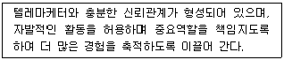
- 지시형 리더
- 위양형 리더
- 지원형 리더
- 참가형 리더
(정답률: 38%)
61. 다음 중 경력관리에 대한 설명으로 틀린 것은?
- 적재적소, 후진양성에 필요하다.
- 능력주의와 연공주의를 절충한다.
- 장기계획이다.
- 조직의 목표와 개인의 목표를 일치시킨다.
(정답률: 46%)
62. 콜센터 수퍼바이저에게 요구되는 자질에 관한 설명으로 틀린 것은?
- 조직의 목표가 달성될 수 있도록 최적의 콜센터 환경을 조성할 수 있어야 한다.
- 텔레마케터들의 통화품질, 업무성과, 근무만족도에 대해 평가 및 피드백을 할 수 있어야 한다.
- 콜센터의 운영예산을 책정하고 집행할 수 있어야 한다.
- 조직 분위기를 활성화할 수 있는 다양한 이벤트와 프로모션을 실시할 수 있어야 한다.
(정답률: 45%)
63. 일반적인 텔레마케팅의 전개과정을 순서대로 바르게 나열한 것은?
- 기획 → 실행 → 측정 → 반응 → 평가
- 기획 → 측정 → 실행 → 평가 → 반응
- 기획 → 측정 → 실행 → 반응 → 평가
- 기획 → 실행 → 반응 → 측정 → 평가
(정답률: 31%)
64. 반론극복기법의 종류 중 논문이나 통계자료에 나와 있는 객관적이고 입증할만한 자료를 인용하여 설명하는 것은?
- 부메랑기법
- 입증법
- 사례법
- 칭찬기법
(정답률: 44%)
65. 텔레마케팅의 조직구조 설계에 있어 고려사항으로 적합하지 않은 것은?
- 수퍼바이저는 10~20명의 상담사를 관리 담당하도록 한다.
- 상담사 교육과 상담품질관리를 전담하는 전문인력을 보유하여야 한다.
- 관리자는 성과지표관리를 위한 인력운영계획을 수립하고 관리하여야 한다.
- 상담사는 모든 상담내용을 직접 처리하도록 운영 설계되어야 한다.
(정답률: 55%)
66. 텔레마케팅에 대한 설명으로 가장 거리가 먼 것은?
- 고객관계관리를 위해 주로 활용한다.
- 다른 매체와 함께 이용될 때 강력한 효과를 나타낸다.
- 다른 매체 대비 비용이 효율적인 매체이다.
- 효과측정이 어려운 매체이다.
(정답률: 55%)
67. SMART 성과목표 설정에 대한 용어 설명으로 틀린 것은?
- Measurable - 측정할 수 있어야 한다.
- Specific - 전문적이어야 한다.
- Result - 전략과제를 통해 구체적으로 달성하는 결과물이 있어야 한다.
- Time-bound - 일정한 시간 내에 달성 여부를 확인할 수 있어야 한다.
(정답률: 38%)
68. 상담사들의 고객상담 능력을 확인하기 위한 운영관리는 무엇인가?
- 상품판매관리
- 통화품질관리
- 업무지식관리
- 성과관리
(정답률: 44%)
69. 다음 중 기업에서 텔레마케팅을 도입하는 목적에 해당되는 내용을 모두 선택하여 바르게 나열한 것은?
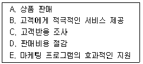
- A, B, C
- A, B, C, D
- A, B, C, E
- A, B, C, D, E
(정답률: 35%)
70. ACD(Auto Call Distribute)에 대한 설명으로 맞는 것은?
- 상담원이 다른 상담원에게 통화내용을 전환하는 기능이다.
- 컴퓨터가 자동으로 전화를 걸어주는 기능이다.
- 상담원이 통화를 끝내는 시기를 예측하여 다이얼링한 후 응답고객만을 연결해주는 기능이다.
- 상담원에게 균등하게 콜을 분배하는 기능이다.
(정답률: 44%)
71. CTI(computer telephony integration) 추가 기능 중 다음이 설명하고 있는 다이얼링 시스템은?
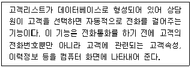
- 프리딕티브 다이얼링(predictive dialing)
- 프로그리시브 다이얼링(progressive dialing)
- 프리뷰 다이얼링(preview dialing)
- 트랜스퍼 다이얼링(transfer dialing)
(정답률: 46%)
72. 콜센터 조직이 갖추어야 할 조직의 특성에 대한 설명으로 틀린 것은?
- 고객지향성 - 콜센터는 고객을 중심으로 고객에게 편리함, 신뢰성, 편익을 제공할 수 있는 조직체이다.
- 유연성 - 고객과의 커뮤니케이션이 빈번하게 일어나는 공간이므로 조직구성원의 사고와 상황대응 능력이 유연해야 한다.
- 고품질성 - 고객의 정보는 곧 자산이며 관리와 보호의 책임성이 있으므로 이러한 관리를 통해 서비스품질을 높여야 한다.
- 신속⋅민첩성 - 콜센터의 생명은 고객니즈에 부응하되, 얼마나 신속하게 대응하는지가 중요한 요소이다.
(정답률: 48%)
73. 텔레마케터를 위해 필요한 교육 프로그램이 아닌 것은?
- 커뮤니케이션
- 판매스킬
- 전산시스템 개발
- 스트레스 관리
(정답률: 54%)
74. 다음이 설명하고 있는 콜센터 시스템의 기능은?
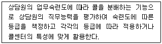
- CTI 기능
- Call Blending 기능
- 음성인식 기능
- Skill Based Call Routing 기능
(정답률: 42%)
75. 텔레마케팅의 성과분석에 있어 매출액과 비용의 차이가 제로(0)가 되는 점을 무엇이라 하는가?
- CPP
- ORT
- BET
- DOT
(정답률: 29%)
4과목: 고객응대
76. 고객과 대화시 친밀감을 형성하는 방법으로 가장 적합한 것은?
- 고객의 말에 흠이 없는지 관찰한다.
- 질문과 답변을 스크립트대로만 한다.
- 고객의 거절방지를 위해 바로 본론을 말한다.
- 고객에게 관심을 갖고 고객욕구를 파악한다.
(정답률: 57%)
77. 고객이 불평, 불만을 호소하는 일반적인 단계를 바르게 나열한 것은?
- 비공식적인 단계 → 공식적인 단계 → 법적인 호소
- 법적인 호소 → 비공식적인 단계 → 법적인 호소
- 비공식적인 단계 → 법적인 호소 → 공식적인 단계
- 법적인 호소 → 공식적인 단계 → 비공식적인 단계
(정답률: 53%)
78. 화가 난 고객을 응대하는 방법과 가장 거리가 먼 것은?
- 고객에게 가능한 것보다는 불가능한 것을 말한다.
- 화가 난 고객을 부정해서는 안 되며, 고객의 감정상태를 인지해야 한다.
- 문제 해결을 위해 객관성을 유지한다.
- 고객과 해결책을 협의하도록 한다.
(정답률: 57%)
79. 불만을 제기한 고객에 대한 응대 원칙이 아닌 것은?
- 우선 사과를 한다.
- 신속하게 해결을 한다.
- 불만 원인을 파악한다.
- 고객이 틀린 부분은 논쟁한다.
(정답률: 60%)
80. 텔레마케터의 효과적인 의사소통에 필요한 사항으로 가장 거리가 먼 것은?
- 같은 수준의 음량, 음조, 스피드로 말함으로써 고객이 집중해서 들을 수 있도록 한다.
- 말하는 동안 미소를 지음으로써 온화하고 성실한 분위기가 조성되어 친밀감을 형성할 수 있다.
- 대화를 하는 가운데 가끔씩 잠깐 멈춤으로써 상담사는 숨을 돌릴 수 있고, 고객에게는 생각할 시간을 줄 수 있다.
- 단어를 분명하고 명확하게 발음함으로써 메시지를 정확하게 고객에게 전달할 수 있다.
(정답률: 34%)
81. 고객이 조직의 어떤 일면과 접촉하는 접점으로서, 서비스를 제공하는 조직과 그 품질에 대해 어떤 인상을 받는 순간이나 사상을 의미하는 용어는?
- MOT
- RFM
- LTV
- FAB
(정답률: 47%)
82. 의사소통의 환경적 상황의 3가지 측면이 아닌 것은?
- 개인적 환경
- 물리적 환경
- 심리적 환경
- 사회적 환경
(정답률: 25%)
83. CRM의 성과를 정량적 측면과 정성적 측면으로 구분할 때 정성적 측면에 해당하는 것은?
- 원가절감
- 고객유지
- 시장점유율
- 구전효과
(정답률: 30%)
84. 기업의 CRM전략 수행에 있어서 콜센터가 중심적 역할을 수행하게 된 배경으로 적절하지 않은 것은?
- 고객데이터나 관련 데이터를 과학적인 분석기법으로 처리가 가능해졌다.
- 일대일(1 to 1) 마케팅 기법이 발달되었다.
- 정보나 영업지식을 영업부서 내에서만 활용하도록 변화되었다.
- 마케팅 자동화, 또는 SFA(Sales Force Automation)를 할 수 있게 되어 영업비용을 줄일 수 있게 되었다.
(정답률: 52%)
85. 다음이 설명하고 있는 것은?
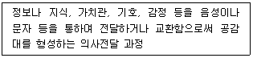
- 매니징 프로그래밍
- 커뮤니케이션
- 팀빌딩(조직개발) 훈련
- 텔레마케팅
(정답률: 50%)
86. 고객과의 관계개선을 위한 방법 중 자기노출에 대한 설명으로 적합하지 않은 것은?
- 자기노출이 증가하면 관계의 친밀감이 커진다.
- 자기노출은 상호적인 경향이 있다.
- 여성은 남성보다 자기노출을 잘하는 경향이 있다.
- 자기노출은 보상이 따를 때 감소한다.
(정답률: 47%)
87. 커뮤니케이션 과정에서 전달과 수신 사이에 발생하며 의사소통을 왜곡시키는 요인을 의미하는 것은?
- 잡음(noise)
- 해독(decoding)
- 피드백(feedback)
- 부호화(encoding)
(정답률: 54%)
88. 우수한 고객응대를 통한 기업의 이득이 아닌 것은?
- 고객만족과 직원만족
- 고객의 재구매
- 경쟁기업의 성장
- 기업에 대한 긍정적 이미지 형성
(정답률: 59%)
89. 상담원의 효과적인 경청으로 거리가 먼 것은?
- 고객의 이야기에 대한 관심을 구체적으로 표현한다.
- 확실하지 않은 내용은 다시 한 번 정중하게 물어본다.
- 고객의 말을 끊지 말고 끝까지 주의 깊게 들어야 한다.
- 주관적 판단이나 감정을 통하여 이해하려고 노력한다.
(정답률: 55%)
90. 다음 괄호 안에 들어갈 말로 알맞은 것은?
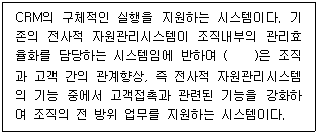
- 분석 CRM
- 운영 CRM
- 협업 CRM
- e-CRM
(정답률: 39%)
91. 다음 중 커뮤니케이션의 목적으로 틀린 것은?
- 영향력 행사
- 정보교환
- 감정표현
- 자유방임
(정답률: 42%)
92. 다음의 고객관련 내용을 토대로 고객의 커뮤니케이션 유형을 진단할 때 이 고객과의 상담을 성공적으로 이끌기 위해 요구되는 상담요령으로 가장 효과적인 것은?
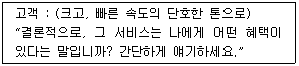
- 서비스 특징을 다양한 사례를 들어가며 설명한다.
- 가능한 한 짧게, 요점만을 명확하게 말한다.
- 고객이 원하는 특징과 이점을 설명하고, 고객시간을 배려하여 결정을 유보하도록 권유한다.
- 상품의 장단점을 비롯한 다양한 특징들을 구체적으로 또는 논리적이고 체계적으로 설명한다.
(정답률: 48%)
93. 전화상담시 상황에 맞게 호감을 주는 말로 가장 거리가 먼 것은?
- 긍정적일 때 - 잘 알겠습니다.
- 정보를 제공할 때 - 메모 가능하십니까?
- 사과할 때 - 뭐라 사과를 드려야 할지 모르겠습니다.
- 부탁할 때 - 어떻게 하면 좋을까요?
(정답률: 39%)
94. 효과적인 경청기법이라고 할 수 없는 것은?
- 재진술
- 선판단
- 응대어 구사
- 끝까지 경청
(정답률: 58%)
95. 고객지향마케팅에 대한 설명으로 맞는 것은?
- 상품의 시장점유율을 중심으로 마케팅 전략을 수립한다.
- 상품의 특징 및 장점 등을 중심으로 마케팅 전략을 수립한다.
- 고객서비스 중심으로만 마케팅 전략을 수립한다.
- 고객이 의사결정의 기준이 되고, 고객관점에서 마케팅 전략을 수립한다.
(정답률: 48%)
96. 불만족고객을 대상으로 상담원의 상담기법이 틀린 것은?
- 인내심을 갖고 공감적 경청을 한다.
- 항상 목소리를 높이며 소비자의 의견에 동조한다.
- 실현 가능한 문제해결 방법으로 최선을 다하고 있음을 전달한다.
- 문제해결이 만족스러웠는가를 확인한다.
(정답률: 55%)
97. CRM의 등장배경이 되는 마케팅 패러다임의 변화로 틀린 것은?
- 생산자 중심에서 고객중심으로의 변화
- one-to-one 마케팅에서 mass 마케팅으로의 변화
- 양적 사고에서 질적 사고로의 변화
- 10인 1색에서 1인 10색으로의 변화
(정답률: 51%)
98. 다음 괄호 안에 들어갈 가장 알맞은 것은?
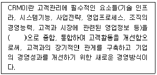
- 기업중심
- 고객중심
- 시장중심
- 영업중심
(정답률: 58%)
99. 텔레마케팅에서 언어표현은 상대방에 대한 인격을 존중하는 마음을 전하는 도구이기에 매우 중요하다고 할 수 있다. 가장 효과적인 단어선택이라고 볼 수 없는 것은?
- 고객에게 확신을 줄 수 있는 긍정적인 단어
- 고객과 공감대를 형성할 수 있는 사투리
- 고객이 받을 수 있는 이점을 위주로 한 단어
- 칭찬, 감사, 기쁨을 표현할 수 있는 말
(정답률: 53%)
100. 고객상담시 고객과의 공감대를 형성하는 방법과 가장 거리가 먼 것은?
- 공통적인 화제로 성의 있게 대화한다.
- 인사는 격식에 따라서 위엄 있게 한다.
- 고객을 진심으로 칭찬한다.
- 고객의 신분에 맞는 존칭어를 구사한다.
(정답률: 52%)